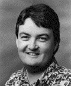
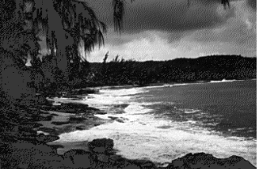
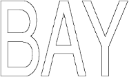
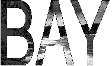

Wading through the vast sea of documentation you get with the QuickDraw GX Software
Developer's Kit, you may not realize all the cool things this new graphics model lets
you do. In this column, we'll look at just one of those cool things: clipping one shape to
the inside of another arbitrary shape. As an illustration, we'll take a bitmapped image
of a tropical beach (Figure 1) and clip it to the word "BAY" (Figure 2). Figure 3
shows the result. There's a sample application and source code on this issue's CD.
CREATING THE SHAPES
We'll be collecting the results of our operations into a picture shape. We'll assume
that the QuickDraw GX environment has already been set up and that we have a window
ready to draw into.
For information on setting up the QuickDraw GX environment, see "Getting Started
With QuickDraw GX" in develop Issue 15. The full details are in Inside Macintosh:
QuickDraw GX Objects and Inside Macintosh: QuickDraw GX Graphics. *
We start by creating an empty picture to which we can add shapes:
gxShape thePicture; thePicture = GXNewShape(gxPictureType);
The bitmap shape we'll be clipping (Figure 1) is stored in our application's resource
fork as a 'pxmp' resource. We retrieve it with the GetPixMapShape call from the qd
library.

Figure 1. The shape to be clipped
gxShape theBitmap; theBitmap = GetPixMapShape(kPixMapID);
To create the clip shape, we start with a text shape containing the word BAY.
gxShape theClip; theClip = GXNewText(3, (unsigned char*)"BAY", nil);

Figure 2. The clip shape

Figure 3. Result of clipping Figure 1 to Figure 2
POSITIONING AND SCALING THE TEXT SHAPE
Before we set our text shape to be the clip of our bitmap shape, we need to move it to
the top left corner of the bitmap shape and then scale it to encompass the entire
bitmap.
We'll look at two ways to do this. The first method takes us through all the steps in the
process, while the second is simpler and lets QuickDraw GX do more of the work for us.
The origin of a text shape is on the baseline, but in this case, because there are no
descenders in the text, we just use the bottom left corner of the shape's bounds. We
need to offset the text shape by its own height from the top of the bitmap shape. So we
need to know the bounds of both the bitmap shape (to find the coordinates of its top left
corner) and the text shape (to calculate its height):
gxRectangle bitmapBounds, textBounds;
GXGetShapeBounds(theBitmap, 0, &bitmapBounds);
GXGetShapeBounds(theClip, 0, &textBounds);
textHeight = textBounds.bottom - textBounds.top;
GXMoveShapeTo(theClip, bitmapBounds.left,
bitmapBounds.top + textHeight);
Our original text shape, which is the default text size of 12 points, isn't big enough to
cover the entire bitmap shape. If we were to do the clipping at this point, we would get
just a tiny piece of the corner instead of the whole bitmap. To get the whole thing, we
have to scale the text shape to match the size of the bitmap shape.
For the text shape to scale linearly, without taking the font's hinting into account, we
have to turn off QuickDraw GX's built-in metrics and contour grid-fitting capabilities.
We do this by setting the shape's text attributes as follows:
GXSetShapeTextAttributes(theClip,
gxNoMetricsGridText | gxNoContourGridText);
Although QuickDraw GX lets us clip to any arbitrary shape, clipping is actually limited
to primitive shapes only. That is, the clip shape must be a shape whose geometry and
fill properties by themselves define the shape; primitive shapes don't use information
from a style or transform object. This is not a problem, though, because we can easily
convert a shape to its primitive form. The following call does the job:
GXPrimitiveShape(theClip);
The result is a filled path shape (which is a primitive shape) representing the
outlines of the letters in the word BAY.
Next we need to determine how much to scale the text shape to encompass the entire
bitmap shape. We do this by finding the width and height of both shapes' bounds
rectangles and scaling the text shape in each direction by the ratio between the two:
Fixed bitmapWidth, bitmapHeight;
Fixed textWidth, textHeight;
Fixed xScale, yScale;
// Determine the width ratio.
bitmapWidth = bitmapBounds.right - bitmapBounds.left;
textWidth = textBounds.right - textBounds.left;
xScale = FixedDivide(bitmapWidth, textWidth);
// Determine the height ratio.
bitmapHeight = bitmapBounds.bottom - bitmapBounds.top;
textHeight = textBounds.bottom - textBounds.top;
yScale = FixedDivide(bitmapHeight, textHeight);
GXScaleShape(theClip, xScale, yScale,
bitmapBounds.left, bitmapBounds.top);
We've now scaled the text shape to encompass the entire area of our bitmap shape, and
we're ready to use it to clip the bitmap shape. But it turns out that there's a shorter
way to do this; we can actually accomplish the same thing with only three lines of code:
GXSetShapeTextAttributes(theClip,
gxNoMetricsGridText | gxNoContourGridText);
GXGetShapeBounds(theBitmap, 0, &textBounds);
GXSetShapeBounds(theClip, &textBounds);
As in the earlier method, we turn hinting off and get the bounds of our bitmap shape.
The magic here is in the GXSetShapeBounds call: when applied to typographic shapes,
this call positions and scales the text to the new bounds and converts it to a primitive
shape. That's it! QuickDraw GX does the hard work for us automatically, and we're
ready to set the clip of our bitmap shape.
SETTING THE CLIP SHAPE
Now that the text shape is positioned and scaled the way we want it, we're ready to set
it up as the clip of our bitmap shape:
GXSetShapeClip(theBitmap, theClip);
This call changes the clip shape contained within the transform used by our bitmap
shape, replacing it with the new clip shape that we've created.
If the same transform were being shared by other shapes, QuickDraw GX would
make a copy of the transform to associate with our bitmap shape, ensuring that the
new clip would not affect any of the other shapes sharing the same transform.*The
next step is to add the clipped bitmap shape to our picture with GXSetPictureParts.
(Note that we could also use the library call AddToShape or the core call
GXSetShapeParts to do the same thing, but I chose to be more explicit here.)
GXSetPictureParts(thePicture, 0, 0, 1, &theBitmap,
nil, nil, nil);
The picture now contains a new reference to the original bitmap shape, complete with
the new clip we've added to it. Once there's a reference to it in the picture, we don't
need the original reference anymore, so we dispose of it:
GXDisposeShape(theBitmap);
DRAWING THE OUTLINE
The last order of business is to draw an outline around the clipped bitmap. We can
accomplish this by setting up the drawing characteristics of our scaled text shape to
draw the outline and then adding it to our picture. To frame the shape with a closed
outline, we set its fill characteristic to gxClosedFrameFill. Since we want the frame to
lie outside the geometry of the shape, we set its style attributes to
gxOutsideFrameStyle. Finally, we set the pen size to 3 to get a satisfyingly fat outline,
and we set the color of the outline to blue:
GXSetShapeFill(theClip, gxClosedFrameFill); GXSetShapeStyleAttributes(theClip, gxOutsideFrameStyle); GXSetShapePen(theClip, ff(3)); SetShapeCommonColor(theClip, blue);
Now we can add the outlined shape to our picture and dispose of it, as before:
GXSetPictureParts(thePicture, 0, 0, 1, &theClip,
nil, nil, nil);
GXDisposeShape(theClip);
DRAWING THE PICTURE
Before drawing our picture, we'll move it down a little from the top left corner of the
window. We could do this by retrieving the picture's transform and shifting it down
and to the right with GXMoveTransform; however, since the gxMapTransformShape
attribute is set for pictures by default, we can just call GXMoveShape:
GXMoveShape(thePicture, f(20), ff(15));
Finally, we're ready to draw the picture:
GXDrawShape(thePicture);
We're done! The result should look like Figure 3.
THAT'S ALL, FOLKS
You've had a quick look at one of the many cool things you can do with the QuickDraw GX
graphics system. As you can see from this example, the power and flexibility of
QuickDraw GX can give your application the ability to do things you could only dream
about until now.
PETE ("LUKE") ALEXANDERRegular readers of Luke's columns will know that he
took his sabbatical from Apple this summer. He sent us a postcard: "Hey dudes! While
you're looking out your windows at Silicon Valley smog, I'm looking out my windows at
the rocky faces of Montana. Have you heard of National Parks? They're places of
unusual beauty set apart from development. Not that kind of development! The kind
that causes smog. At Yellowstone Park I enjoyed the clear air, I found where the buffalo
roam, and I learned why they call it Old Faithful. I'm now flying somewhere over
Montana (don't worry, I'm steering with my knee), admiring the mountains with their
lingering snow and enjoying the wide open spaces. Oops, mountain ahead and no more
room on the card." He signed it, "See you later, Luke" but then crossed out the "See you
later." We're worried, really worried.*
Thanks to Hugo Ayala and Cary Clark for reviewing this column. *